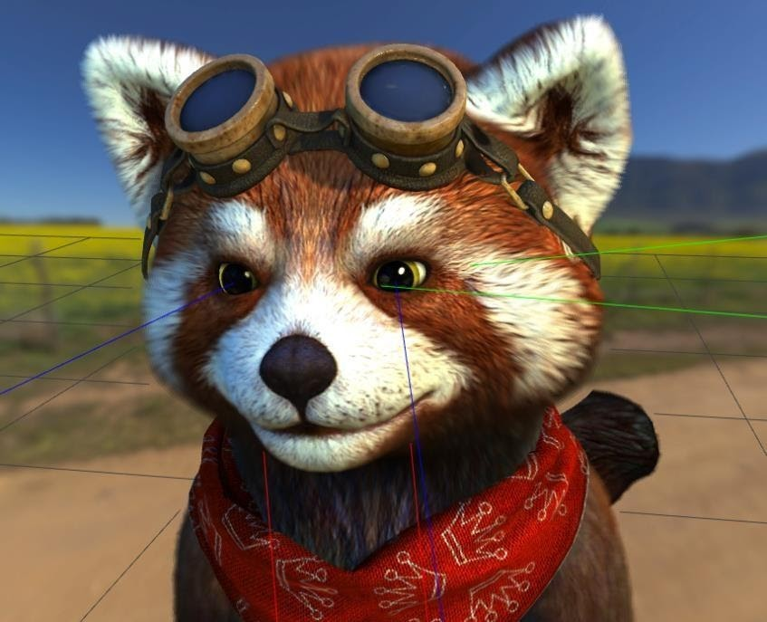
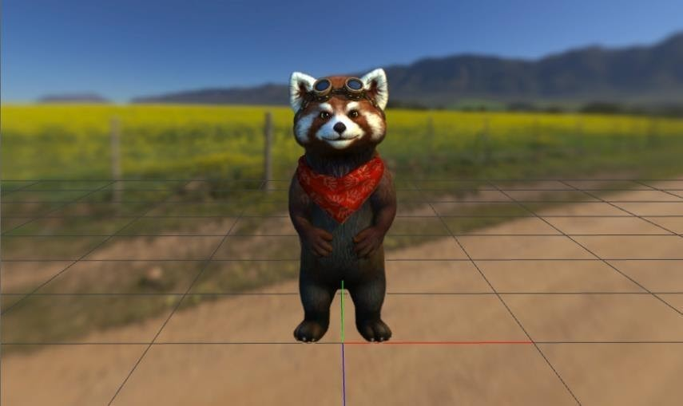

Skeleton
There are 4 bones that require a specific naming in Animaze: Camera, BipHead, BipLEye and BipREye. These bones are used in Animaze for calculations, like look-at-camera function, for example.
A base skeleton rig, for both types of avatars (all-joint based & all-joint plus blendshapes based) must include these bones: BipHead, BipRoot, BipLEye, BipREye & Camera, with this exact naming.
The Camera and head bones must have their respective Z axis pointing to one another after import. It's possible that the way that the model is being handled and the axis conventions from the 3D software that generates the animation, to differ from the same features of Animaze, and thus the Z axis actually be Y or X in that original space.
Each bone of the eyes must be placed in center position of the eyeball, and their forward axis (blue line) must run through the center of the pupil. This will guarantee that the avatar will be looking at the camera and will follow it when moved.

Prop bones represent the bones meant for accessories attachment. These bones are used in Animaze to place objects on the avatar, and they will hold the suffix _Prop (i.e. Nose_Prop used for glasses).
When importing your avatar in Animaze, make sure it’s oriented correctly, with Z axis forwarding towards the camera. This can be manually set in Animaze Editor if necessary.
